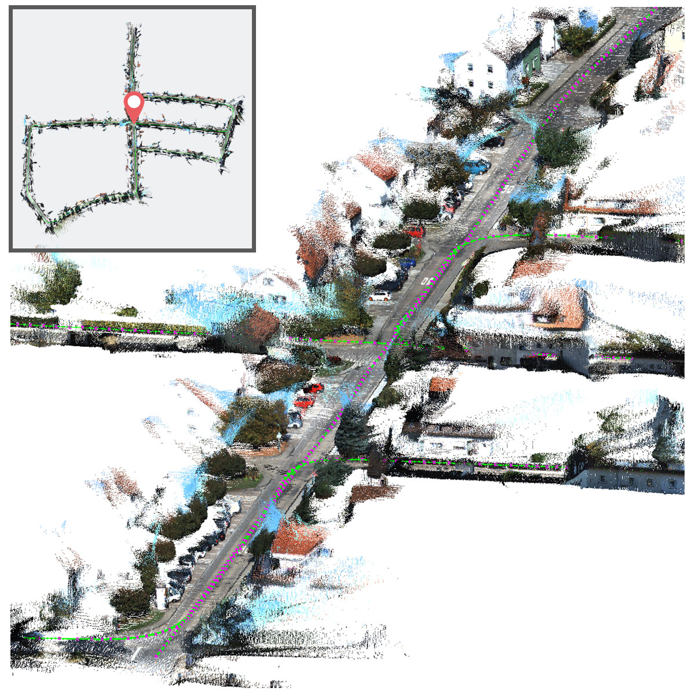
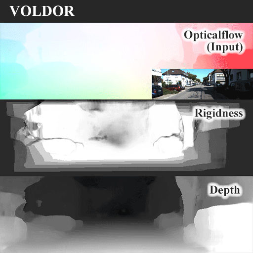

Zhixiang Min
I am a third-year Ph.D. student at Stevens Institute of Technology, under the supervision of Prof.
Enrique Dunn. Before, I received my BSc from Donghua
University.
My research focuses on geometric computer vision. I am insterested in developing new approaches for vision tasks including visual odometry, SLAM, multi-view stereo and image-based rendering. I also like studying lower-level tasks such as optical flow and geometric models.
Email: zmin1 [at] stevens.edu
Projects
|  |
VOLDOR-SLAM: For the times when feature-based or direct methods are not good enough Zhixiang Min, Enrique Dunn ICRA 2021 [pdf] [video] [code] Our SLAM solution has achieved 2nd place in both tracks (monocular, stereo) of CVPR'20 SLAM Challenge with realtime performance. |
|  |
VOLDOR: Visual Odometry from Log-logistic Dense Optical flow Residuals Zhixiang Min, Yiding Yang, Enrique Dunn CVPR 2020 (Oral) [pdf] [appendix] [video] [code] (code is released) (The arxiv version fixed some editorial errors.) |